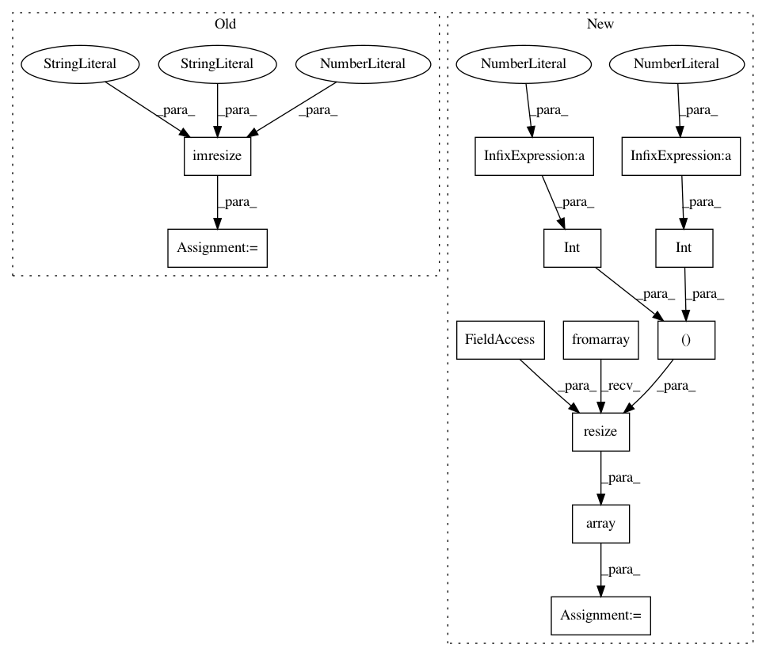

6001ecdbcf10a5656aac2d51c53be834eebe06f7,python/src/vmaf/core/noref_feature_extractor.py,NiqeNorefFeatureExtractor,mscn_extract_niqe,#Any#Any#Any#Any#,369
Before Change
def mscn_extract_niqe(cls, img, patch_size, mode):
h, w = img.shape
img2 = imresize(img, 0.5, interp="bicubic", mode="F")
m_image1, img_var, _ = cls.calc_image(img, extend_mode="nearest")
m_image1 = m_image1.astype(np.float32)
After Change
def mscn_extract_niqe(cls, img, patch_size, mode):
h, w = img.shape
img2 = np.array(Image.fromarray(img).resize((int(w / 2.0), int(h / 2.0)), Image.BICUBIC))
m_image1, img_var, _ = cls.calc_image(img, extend_mode="nearest")
m_image1 = m_image1.astype(np.float32)
In pattern: SUPERPATTERN
Frequency: 3
Non-data size: 12
Instances
Project Name: Netflix/vmaf
Commit Name: 6001ecdbcf10a5656aac2d51c53be834eebe06f7
Time: 2019-11-09
Author: cbampis@gmail.com
File Name: python/src/vmaf/core/noref_feature_extractor.py
Class Name: NiqeNorefFeatureExtractor
Method Name: mscn_extract_niqe
Project Name: scikit-video/scikit-video
Commit Name: 87f878b96bf00cb19d850992f01d9370b57b8345
Time: 2019-10-21
Author: stg7@gmx.de
File Name: skvideo/measure/niqe.py
Class Name:
Method Name: _get_patches_generic
Project Name: scikit-video/scikit-video
Commit Name: 87f878b96bf00cb19d850992f01d9370b57b8345
Time: 2019-10-21
Author: stg7@gmx.de
File Name: skvideo/measure/brisque.py
Class Name:
Method Name: brisque_features